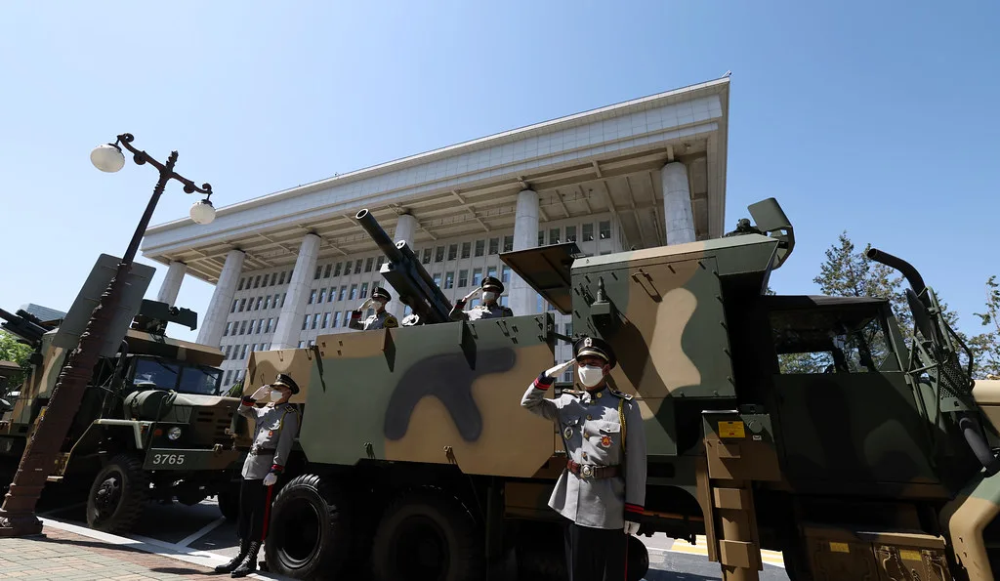

단일종목 레버리지 ETF 국감 도마…"靑 개입" vs "음모론" 공방
국회 정무위원회의 금융위원회 국정감사에서 단일종목 레버리지 상장지수펀드(ETF) 도입 책임을 둘러싼 여야 공방이 거세게 벌어졌다. 국민의힘은 해당 상품 도입 과정에 청와대가 개입했다는 의혹을 제기하며 김용범 전 청와대 정책실장을 증인으로 불러야 한다고 요구했고, 더불어민주당은 근거 없는 음모론이라며 맞섰다. 단일종목 레버리지 ETF·ETN은 지난 5월 27일 국내 시장에 처음 상장된 상품으로, 삼성전자와 SK하이닉스 등 개별 종목의 일간 주가 변동률을 플러스·마이너스 2배로 추종하는 구조를 갖고 있다.
국민의힘 의원들은 올해 1월 28일 금융위 보고에서는 해당 상품이 하반기 출시로 예정돼 있었는데, 3월 18일 관계기관 합동회의를 거치며 2분기 조기 출시로 일정이 앞당겨졌다는 점을 문제 삼았다. 출시 시점이 갑작스럽게 당겨진 배경에 청와대의 지시나 압박이 있었던 것 아니냐는 의혹이다. 이에 대해 이억원 금융위원장은 "청와대 지시로 상품을 도입한 것은 아니다"라며 "여러 부처와 업권의 의견을 들어 적법한 절차를 거쳐 결정한 사안"이라고 답했다.

이날 국감에서는 투자자 피해 규모를 둘러싼 논쟁도 이어졌다. 일부 의원들은 해외 자료를 근거로 54조원에 이르는 손실이 발생했다고 주장했고, 다른 의원들은 국민연금 손실까지 포함해 182조원대 피해를 거론하기도 했다. 그러나 이억원 위원장은 이런 수치들이 정확성이 떨어진다고 반박했다. 그는 해당 숫자가 특정 금융사의 공식 자료가 아니라 트레이딩 부서의 비공식 시장 논평에서 나온 것이며, 단일종목 레버리지 ETF뿐 아니라 다른 국내외 레버리지 상품까지 모두 포함된 수치라고 설명했다. 금융감독원이 별도로 집계한 자료에서는 10개 증권사의 매매 손실이 8월 14일까지 약 2조3000억원 규모로 추정됐다고 밝혔다.
금융위는 이 상품의 도입 배경에 대해 규제 차익 해소와 투자자금 역외 유출 방지 필요성을 들었다. 미국과 홍콩 등 해외 시장에서 이미 국내 주식을 기초자산으로 한 단일종목 레버리지 상품이 거래되고 있었던 만큼, 국내에 유사 상품을 들여오지 않으면 투자 수요가 해외로 계속 빠져나갈 수밖에 없다는 논리였다. 다만 상품 설계가 복잡하고 변동성이 커 전문 투자자조차 이해하기 어렵다는 지적이 상장 이후 꾸준히 제기돼 왔으며, 실제로 일부 증권사들도 자체 운용 과정에서 손실을 본 것으로 알려졌다.
여당 의원들은 야당이 제기하는 청와대 개입설이 명확한 근거 없이 정치적 공세로 흐르고 있다고 비판했다. 반면 야당 의원들은 출시 일정이 단기간에 앞당겨진 경위와 관련 기관 간 협의 기록을 투명하게 공개해야 한다고 요구하며 추가 자료 제출을 압박했다. 이형일 경제부총리와 권대영 금융위 부위원장 등 관계자들은 국감 과정에서 투자자 손실과 국민적 우려에 대해 "송구하다"는 입장을 밝혔지만, 구체적인 재발 방지 대책이나 보상 방안은 아직 제시되지 않은 상태다.
금융위는 이번 국감을 계기로 단일종목 레버리지 상품의 시장감시 체계를 강화하고 투자자 보호장치를 보완하겠다는 방침을 재확인했다. 그러나 상품 도입 필요성 자체는 인정하면서도 출시 과정의 의사결정 구조와 책임 소재를 둘러싼 논란은 쉽게 가라앉지 않을 것으로 보인다. 국정감사가 이어지는 동안 관련 상임위에서 추가 질의와 자료 제출 요구가 계속될 전망이다.